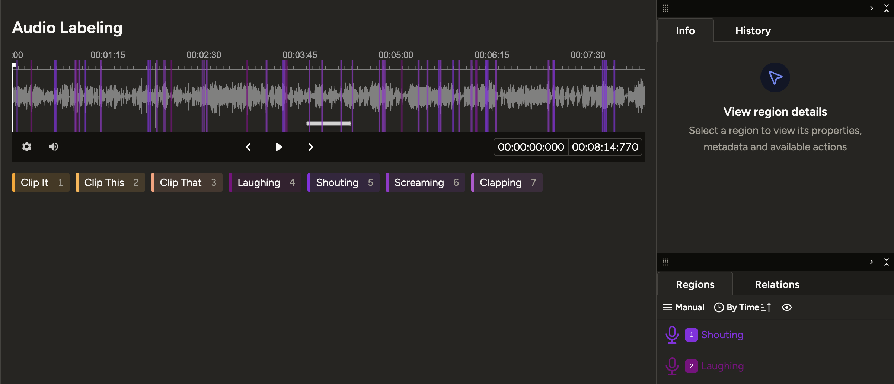

AI Labelling Dataset
An end-to-end data pipeline — from gathering raw audio clips and game frames, to annotating emotion, loudness, topic, and sentiment — supporting AI model development at Eklipse.gg.

- Role
- AI & Data Intern
- Period
- 2025 – Present
- Company
- Eklipse.gg
- Status
- Ongoing
Overview
This work goes beyond simple labelling — it's a complete end-to-end pipeline from raw data collection all the way to production-ready datasets. Each cycle starts with data gathering, moves through annotation, then passes validation, and loops back to re-annotation whenever quality falls short of the required standard.
There are two parallel tracks running simultaneously: audio data powering the Just Chatting and Voice Command models, and image/frame data feeding the YOLO-based visual detection model. Both tracks are integral parts of the broader AI ecosystem at Eklipse.gg.
Audio Data — Just Chatting & Voice Command
Audio datasets are collected from multiple streaming and short-form video platforms — Twitch clips, YouTube Shorts, and regular YouTube videos. Each clip ranges from 3 to 20 minutes in length, with a strict focus on English-language content to ensure the trained models generalize well across diverse accents, speaking styles, and conversational contexts.
Collecting short clips from Twitch, YouTube Shorts, and YouTube. Clips are selected based on audio quality, language, and content relevance to the target model category (Just Chatting or Voice Command).
Each audio segment is labelled across multiple dimensions: emotion (shouting, laughing, screaming, neutral, etc.), loudness level, topic (game discussion, reaction, commentary), and sentiment (positive, negative, neutral).
Datasets go through inter-annotator validation. Inconsistent or ambiguous entries are flagged and returned for re-annotation with updated guidelines, maintaining high annotation reliability throughout the pipeline.
Label Categories
Image / Frame Data — YOLO UI Detection
Running in parallel with audio work, this track covers the collection and annotation of gameplay video frames. The dataset trains a YOLO model responsible for detecting in-game UI elements and visual context in real-time — identifying what game is being played, what weapons are in use, and what events are unfolding on screen.
Frames are extracted from gameplay videos across various game titles. Selection ensures sufficient scene variety — lobby screens, in-game moments, kill feeds, inventory views, and more.
Each frame is labelled with bounding boxes around relevant elements: the game being played, the weapon currently in use, in-game events (kill, death, bomb plant, etc.), and other UI elements targeted by the detection model.
Datasets go through a review pass to verify bounding box accuracy and catch any missed or misclassified labels — especially for small or overlapping UI elements where precision matters most.
Detection Targets
Tools & Workflow
Primary tool for audio annotation — timeline segmentation, multi-label per segment, and a review queue for validation passes.
Bounding box annotation for image datasets, with direct export to YOLO-compatible formats ready for model training.
Automated pipeline for downloading clips via Twitch API and Google API, normalizing metadata, and batch preprocessing before annotation.
Annotation progress, review status, and re-annotation flags are tracked collaboratively via shared spreadsheets across the team.